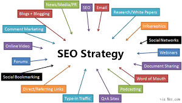

SEO strategies help boost your website’s visibility on search engines and attract more organic traffic. Effective SEO strategies include keyword optimization, quality content, and local SEO tactics.
SEO Strategies:
To understand seo strategies first we have tio understand local seo
Understanding Local SEO
Understanding Local SEO in Detail: The Complete Guide
Local SEO (Search Engine Optimization) is a digital marketing strategy focused on optimizing a business’s online presence to attract more customers from relevant local searches on Google and other search engines. These searches usually include location-specific queries like “best pizza near me” or “plumber in Karachi.”
1. What is Local SEO?
Local SEO helps your business appear in search results when people in your area are looking for products or services you offer. It’s crucial for businesses with physical locations or that serve specific geographic areas.
Examples of local searches:
- “Hair salon in DHA Karachi”
- “Best biryani near me”
- “Top real estate agents in Islamabad”
2. Why Local SEO is Important
- Increased Visibility: Rank higher in local search results.
- Foot Traffic: Brings more people to your physical store.
- Mobile Users: Over 60% of local searches are done on smartphones.
- Higher Conversion Rates: Local searches often lead to quick decisions.
- Google Maps Exposure: Appear in Google Maps when people look for directions or nearby places.
3. Key Elements of Local SEO
✅ Google Business Profile (GBP)
What to do:
- Claim and verify your listing.
- Add accurate NAP (Name, Address, Phone number).
- Choose the correct business category.
- Add photos, hours, and services.
- Collect and respond to reviews.
✅ NAP Consistency (Name, Address, Phone Number)
- Ensure your business information is consistent across your website, Google Business Profile, social media, and directories.
✅ Local Keywords Optimization
- Use keywords that reflect your location and services.
- Example: “Karachi wedding photographer” instead of just “wedding photographer.”
✅ On-Page SEO for Local
- Include local keywords in:
- Page titles
- Meta descriptions
- Headers
- Content
- Footer with address
- Create location-specific landing pages.
✅ Local Citations
- List your business on online directories:
- Yelp, Yellow Pages, Justdial, Foursquare, etc.
- Keep information consistent.
✅ Online Reviews and Ratings
- Encourage happy customers to leave Google reviews.
- Respond to reviews politely.
- High ratings improve visibility and trust.
✅ Local Backlinks
- Get links from other local businesses, newspapers, blogs, and sponsorships.
- Example: “Featured in Karachi Today’s Top 10 Gyms.”
✅ Mobile Optimization
- Make sure your website is responsive and loads fast on mobile.
- Over half of local searches are mobile-based.
✅ Use of Structured Data / Schema Markup
- Add local business schema to your website code to help search engines understand your business information better.
4. Local SEO Ranking Factors (According to Moz)
| Factor | Importance |
|---|---|
| Google Business Profile Signals | 25% |
| On-Page Signals | 20% |
| Review Signals | 15% |
| Citation Signals | 10% |
| Behavioral Signals (Click-through rate, etc.) | 10% |
| Backlink Profile | 15% |
| Personalization & Proximity | 5% |
5. Tools for Local SEO
- Google Business Profile Manager
- Moz Local
- BrightLocal
- Semrush or Ahrefs
- Whitespark Local Citation Finder
- Google Analytics & Search Console
6. Local SEO Best Practices
- Keep your Google Business Profile updated regularly.
- Post weekly updates or offers.
- Use local keywords in blog content.
- Encourage customers to leave reviews.
- Add FAQs with local search intent.
- Embed Google Maps on your contact page.
7. Local SEO for Different Types of Businesses
| Business Type | Local SEO Strategy |
|---|---|
| Restaurants | Focus on reviews, menus, hours, mobile-friendly website |
| Real Estate | Create landing pages for each neighborhood |
| Gyms | Use local citations, Google reviews, and location tags on posts |
| E-commerce (with local delivery) | Mention delivery areas on site and GBP |
8. Common Mistakes in Local SEO
- Inconsistent NAP across platforms.
- Ignoring negative reviews.
- No mobile optimization.
- Not updating Google Business regularly.
- Using global keywords instead of local ones.
9. Tracking Success in Local SEO
- Rankings: Track how your keywords perform locally.
- Traffic: Monitor local traffic via Google Analytics.
- Leads & Calls: Track form submissions or calls from Google Business.
- Reviews: Track review growth and ratings.
10. Final Thoughts
Local SEO is essential for small businesses, service providers, and anyone targeting a specific geographic area. When done right, it can drive massive organic traffic, increase footfall, and significantly boost conversions.
What Is an SEO Strategy?
An SEO strategy (Search Engine Optimization strategy) is a detailed plan used to improve a website’s visibility on search engines like Google. The goal is to increase organic (unpaid) traffic by ranking higher in search engine results pages (SERPs) for keywords that your target audience is searching for.

Key Purpose of an SEO Strategy:
To align your website’s content and structure with the needs of users and the way search engines work—so you appear higher in search results and attract more relevant traffic.
Main Components of an SEO Strategy
1. Keyword Research
- Finding the words and phrases (keywords) that people search related to your business.
- Tools: Google Keyword Planner, Ahrefs, Ubersuggest.
2. Content Creation
- Creating high-quality, relevant, and helpful content around those keywords.
- Includes blog posts, product pages, service pages, FAQs, etc.
3. On-Page SEO
- Optimizing individual pages for SEO elements like:
- Title tags
- Meta descriptions
- Headers (H1, H2)
- Keywords
- Internal linking
- Image alt text
4. Technical SEO
- Ensuring your website is accessible and indexable by search engines:
- Mobile-friendly design
- Fast loading speed
- Secure (HTTPS)
- Clean URL structure
- XML sitemap and robots.txt
5. Off-Page SEO
- Improving your website’s reputation and authority through:
- Backlinks (links from other sites)
- Social sharing
- Brand mentions
6. Local SEO (if targeting a local area)
- Optimizing your Google Business Profile
- Using location-based keywords
- Getting local citations and reviews
7. Analytics & Monitoring
- Tracking performance through:
- Google Analytics (traffic)
- Google Search Console (indexing, keywords)
- SEO tools (rankings, backlinks)
Why an SEO Strategy Matters
Without a clear SEO strategy, your efforts may be scattered and ineffective. A strong strategy helps you:
- Target the right audience
- Use resources efficiently
- Track measurable progress
- Stay ahead of competitors
- Drive consistent, long-term traffic
Simple Example:
If you run a fitness center in Karachi, a good SEO strategy might include:
Fast, mobile-friendly website with service and contact pages
Keywords like “best gym in Karachi” or “female personal trainer Karachi”
A blog post titled “Top 5 Exercises for Weight Loss at Home”
Google Business Profile with reviews and photos
Local directories like Pakbiz, Justdial, or OLX
These Are Key Elements of SEO Strategy
1. Optimize Google Business Profile
- Ensure your business name, address, and phone number (NAP) are accurate.
- Add high-quality images of your business premises and products.
- Encourage satisfied customers to leave positive reviews.
2. Incorporate Local Keywords
- Use keywords that reflect your services and location, such as “Karachi bakery” or “plumber in DHA Karachi.”
- Include these keywords in your website’s meta titles, descriptions, and content.adcrowd.pk
3. Create Location-Specific Content
- Write blog posts about local events, news, or community involvement.
- Develop landing pages targeting specific neighborhoods or districts in Karachi.
4. Build Local Backlinks
- Collaborate with local bloggers, news outlets, and community websites to earn backlinks.
- Participate in local events and get featured in event listings.
5. Ensure Mobile-Friendly Website Design
- With a significant number of users accessing websites via mobile devices, ensure your site is responsive and loads quickly.
- A mobile-friendly design improves user experience and search rankings.
6. Utilize Local Business Directories
- List your business in reputable local directories such as Pakbiz, Yellow Pages Pakistan, and local chamber of commerce websites.
- Ensure consistency in NAP information across all listings.
Monitoring and Analytics
- Use tools like Google Analytics and Google Search Console to monitor traffic sources, user behavior, and keyword performance.
- Regularly assess which strategies are driving results and adjust accordingly.
Conclusion
Implementing these local SEO strategies can significantly enhance your business’s online visibility in Karachi. By focusing on localized content, optimizing your Google Business Profile, and building local backlinks, you position your business to attract more local customers and achieve sustainable growth.
For professional assistance in optimizing your website for local search, explore our Home Page, review our Pricing options, or view our Project Portfolio to see our successful implementations.